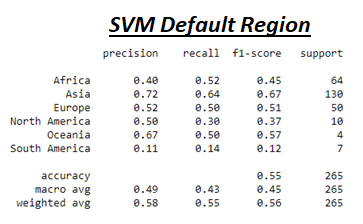
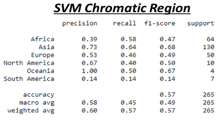

Project Summary
Our exploration of the two data sets with the three aforementioned machine learning algorithms returned some surprising results. Of note:
- For two of the algorithms, the additional inputs in the chromatic dataset did not lead to a more accuratate outcome. Perhaps the extra inputs created too much noise. The fact that the chromatic dataset is based on the western, 12 note scale could also lead to confusion.
- The Sub-Region results did not accomplish accuracy greater than 50%, so we investigated results using the Regions (a much broader category). The results from this testing is shown below.
- As you can see the most accurate Region preditions tended to correlate with Regions that had a lot of data. For this reason, we suggest that in the future, a data set be created that more evenly represents each reigon.
| Algorithm | Default(% ACC) | Chromatic(% ACC) |
|---|---|---|
| Random Forest | 0.358 | 0.335 |
| KNN | 0.434 | 0.370 |
| SVM | 0.390 | 0.410 |


